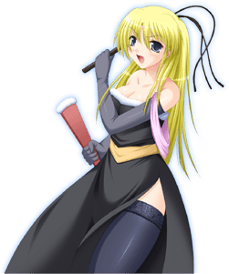
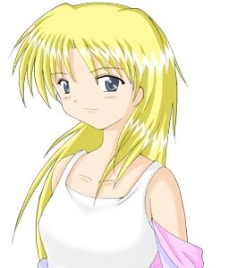

- Welcome to Touhou Wiki!
- Please register to edit. For assistance, check in with our Discord server or IRC channel.
Marie
| マリー Marie ma̠ɾiː | |
|---|---|
|
 Marie in Banshiryuu
| |
| Species | |
| Age |
19 years old |
| Occupation |
Soldier, Assassin |
| Location |
Seihou World (Earth) |
Music Themes | |
| |
Appearances | |
| Official Games | |
| |
- Note: This article is part of the Seihou Project by the Doujin circle "Shunsatsu sare do?".
Marie (マリー Marī) is a 19-year-old lady and is the Lady of a benefactor known as the "Industry". Although she can be whimsical at times and is a little sadistic, she garners the respect of anyone put under her command nonetheless. She appears in all of the Seihou Project games.
General Information[edit]
Marie first appeared as the fourth stage boss of Shuusou Gyoku, where after she appeared as a playable character in Kioh Gyoku. About 7 years later when Banshiryuu had C74 version release, she appeared as the 1st Extra Stage boss as the start of a boss rush.
Personality[edit]
She has a sadistic personality and has feelings for other women, suggesting that she's a lesbian. In the Ending of Shuusou Gyoku, her personality doesn't change that much.
Character Basis[edit]
Name[edit]
Her name is Marie. The origin of her name is from the manga Jesus. The name itself can mean "bitter".
Design[edit]
Marie's design in Shuusou Gyoku shows that she has blonde hair with a white tanktop and a wide brimmed white hat with a blue band. Her design has minor changes in Kioh Gyoku's where she has no hat and now has an odd pink jacket/armband(?). In Banshiryuu, she had a completely new look, where she wore a dominatrix-esque cocktail dress with tan belt, navy blue pants, and her pink armband from Kioh Gyoku reappears with a black whip and a red fan(?).
Story[edit]
- Shuusou Gyoku
- Main article: Shuusou Gyoku Story
In Shuusou Gyoku, Marie finds out that the Cactus Company is running an investigation in another dimension, and mistook it for an opportunity to gain a large profit. She was then sent to beat up VIVIT (as an assassin), but she failed.
- Kioh Gyoku
- Main article: Kioh Gyoku Story
In Kioh Gyoku, along with VIVIT, she targeted Morgan. Though she has such side to her, her EX attack is different from those of others, and now its name has become a catchphrase of her reflecting her personality.
- Banshiryuu
- Main article: Banshiryuu Story
After the heroine is notified about some "evil beings", they first encounter Marie in a giant spaceship in Outer Space, determined to defeat the heroine. Despite the spaceship's size, Marie was defeated.
Relationships[edit]
VIVIT[edit]
VIVIT is a target for Marie to beat up and stalk. Whatever Marie would be saying to VIVIT, VIVIT would reply that she doesn't have "interests in those kinds of things". In Shuusou Gyoku, Marie said "I just love girls with... Long red hair, white skin... Just perfect!" and in the Ending, she tries to ask VIVIT out on a date. In Kioh Gyoku, when Marie won against VIVIT, she says "Since I've won... That means you're mine... I won't take no for an answer!" and apparently sends love letters to her.
Morgan[edit]
Similar to VIVIT, Marie was targeting Morgan in Kioh Gyoku. Morgan said to Marie "Marie, after this punishment stop bullying little girls" while Marie said "Very nice, Your looks, attitude... I love them all..." Apparently, they're old friends.
Minor Relationships[edit]
- Erich
It seems like there's something in between her and Erich.
- VIVIT-r
It is known that Marie is VIVIT's stalker, but for Marie to also stalk VIVIT-r is unknown. In the Extra Stage of Banshiryuu, Marie says "This time, you're not running away!" acknowledging that she knew VIVIT-r before. However, it's unknown if Marie is aware of VIVIT-r not been VIVIT.
Additional Information[edit]
- She somewhat looks similar to Louise in her Shuusou Gyoku outfit.
Official Profiles[edit]
|  | ◆ マリー ◆
・インダストリーのお嬢様、１９歳。 ☆ 機体名 ☆ ☆ 特徴 ☆ |
◆ Marie ◆
・The Industry's lady (ojou-sama), 19 years old. ☆ Aircraft name ☆ ☆ Characteristics ☆ |
Official Sources[edit]
- 2000/12/30 Shuusou Gyoku
- 2001/12/30 Kioh Gyoku
- 2008/08/16 Banshiryuu
| This page is part of Project Characters, a Touhou Wiki project that aims to write proper descriptions for all official characters of Touhou Project. Please keep the character page guidelines in mind when contributing. |